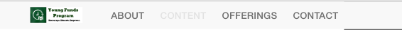
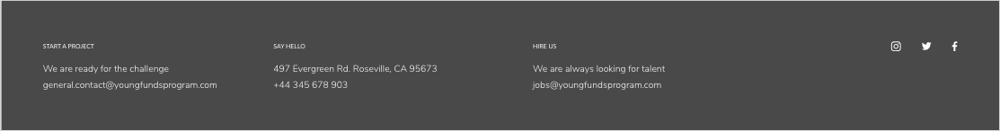
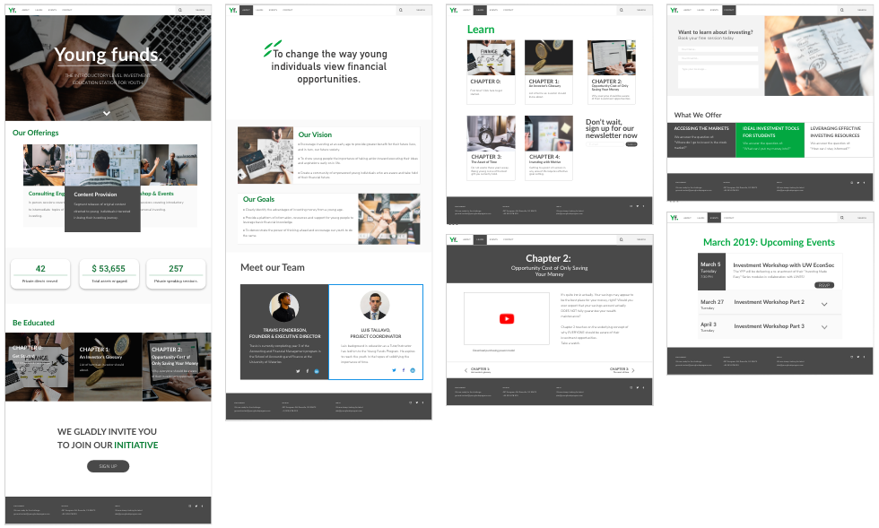

Pain points:
As someone who is interested in learning about investing but has little to no exposure on the topic, I fit into the target demographic perfectly. To get a broader perspective with less bias, I also asked a few friends to share their thoughts on the site as well. Afterward, I grouped them into three categories and concluded the main pain points to be:
Inconsistency in design

The various shades of purple for the background, different header styles, and choice of stock photos causes the site to appear disorganized. Users also thought the addition of floating animations didn’t add to the design and were rather distracting.
Content disorganization

A lack of hierarchy and spacing between different content groups made it difficult for users to navigate through the site and comprehend the information. Additionally, there is plenty of repetitive information scattered around the site.
Usability difficulties

Users found that repeating the navigation menu in the footer to be unnecessary and that there were far too many links, many of which can be grouped and condensed.
Wireframes pt.1
YFP mainly targets young adults who, according to a
HubSpot
article, typically spend less than 15 seconds on the website.
Therefore, my redesign aims to get the purpose, offerings, and organization's goal across as quick
and seamless as possible.
To do this I focused on three main aspects:
Content
The first step was to re-organize the pages and content to be included so that a sitemap could be developed. The sitemap will serve as the basis for determining how content will be grouped, specifically how to determine h1, h2, etc.

The objective of YFP is clearly stated and displayed at the top for utmost visibility so when a user visits, they know exactly what the site will be about.

Replicating common layout designs, I decided to separate sections by changing the background color and grouping similar information together using cards.
Design
Wanting to instil a minimalistic and professional feel to the site, I did some research
by looking popular finance and education websites, such as
Investopedia,
Nasdaq,
and Khanacademy.
Assessing the similarities between the sites helped me decide what design elements and
principles to focus on to successfully replicate a trustworthy brand image, as as if I
were to be a potential client that’s what I’d want from an investing advisor.
I decided to get rid of the animations all together and use a sans serif font for
simplicity,
alternating background color to separate between sections, and use plenty of relevant stock
images.
Usability
Irrelevant links were either removed or grouped into subcategories to clean up the navigation menu and the repetitive menu was also removed from the footer. Additionally, I used a lighter shade to highlight the current active page instead of complimentary colors.

While the homepage provides an overview, having 'Learn More' call-to-actions increases engagement, gives with more control over the information users wish to know, and the time they want to spend on the page. If the user is interested in learning more about a certain section, they can access that sub-page at ease by clicking 'Learn More'. If the user is not interested, they can simply scroll to the next section
By adding padding and consistent heading styles, hierarchy between content blocks were established. This helped to portray a more organized and professional brand image as well as easily convey information to the user.
Wireframes pt. 2
After reviewing each other's wireframes, Nish and Sakksham collaborated to combine the best aspects of everyone's wireframes into one and went through the site to organize the content.

Nish and Sakksham also chose a color scheme and stock images that would reflect the goals of the company. A dark gray overlay was added on top of the images to increase contrast between the text and the background image, therefore being easier on the readers eyes.
Development
After reviewing the wireframes, I suggested we add padding between content blocks to make it appear less clustered and divert from using neon greens as it appears more playful rather than professional. Taking into consideration of mine and Gina's suggestions, we iterated the wireframes once more before development.
View final deliverable here
Reflection
Although we had a good understanding of YFP's mission, goals, and offerings, more communication could have occurred between the team and Travis. By having Travis apart of the design process, we could have filtered the content to be catered more towards what YFP prefers. After all, maybe we decided to not include information that YFP might have thought to be vital to their organization. Additionally, due to the scope of the project, we only went through a few rounds of iterations, therefore plenty of usability/UI issues might have been overseen. For example, buttons and submission forms should be kept consistent throughout the site.
Improvements:
Design: gradients are currently a popular UI trend that YFP can take advantage of. Instead of
simply using green to highlight call-to-actions or key messages, a gradient from the previous neon green
to the current forest green
can be used.
Usability: using jQuery to add a popup box for users to subscribe or connect with YFP would
increase the probability of getting sign-ups from users as well as help users understand that the site
wants to connect with them.
Additionally, including popups for all "sign-up" buttons would prevent the user from having to take an
additional step in getting connected.
Content: the current redesign uses plenty of stock photos, which can potentially give off an
untrustworthy vibe to the user. We could have reached out to Travis for first-hand photos or other media
content, which would
help build the brand as well.
Next steps
Go mobile: I definitely think to develop a mobile version of the site would be extremely
beneficial to YFP as the majority of the target audience browse information on their phones more often
than desktops.
Testing: analyzing how users actually engage and navigate through the site will validate whether
the chosen layout and organization of information is sustainable or not.
Benchmark study: tracking the conversions between impressions and sign-ups of the new site when
compared to the existing site would also be a good indicator of the successfulness of the redesign.